关于我
教育背景
2022.09 – 2026.06 · 东北大学 计算机科学与技术（本科）
专业排名 32 / 192（16.67%），GPA 4.0018 / 5.0。
主修课程：高等数学（98）、C++ 程序设计（98）、线性代数（97）、离散数学（94）、操作系统（92）、计算机组成原理（90）。
项目经历
2023.06 – 2023.09 · 基于 ERNIE 的文献语义检索系统
搭建召回与排序模型并分别训练，召回模型 recall@20 = 0.813，排序模型 AUC = 0.773。
2024.09 – 2025.01 · 基于多目标的微信短视频推荐系统
引入 DIN 与 Transformer Encoder 建模兴趣演化，采用 MMoE 多专家网络联合建模，加权 AUC = 0.8185。
社会工作
2024.11 – 2025.11 · 东北大学秦皇岛分校校友服务中心顾问（聘期一年）
参与校友服务与联络工作，获聘校友服务中心顾问。
研究方向
荣誉奖项
- 2022国家励志奖学金
2022–2023 学年度国家励志奖学金（编号 2023年673号）。
- 2022校级“三好学生”荣誉称号
2022–2023 学年校级三好学生。
- 2022–2025校级三等奖学金（4 次）
2022–2023、2023–2024、2024–2025 学年多次获校级三等奖学金。
- 2023校级“优秀团员标兵”荣誉称号
2023 年度学团工作表彰，共青团东北大学秦皇岛分校委员会颁发。
- 2023国际大学生数学建模竞赛三等奖
2023 年国际大学生数学建模竞赛（美赛）三等奖。
- 2024第十六届全国大学生数学竞赛（非数学 A 类）一等奖
中国数学会颁发，编号 CMS（冀）F20240506。
- 2024校级“优秀团干部”荣誉称号
2024 年度学团工作表彰，共青团东北大学秦皇岛分校委员会颁发。
- 2024校创新创业奖学金
2024 年度创新创业奖学金（计算机与通信工程学院）。
- 2024校友服务中心顾问聘书
获聘东北大学秦皇岛分校校友服务中心顾问，聘期一年。
证书展示
点击任意证书可放大查看。
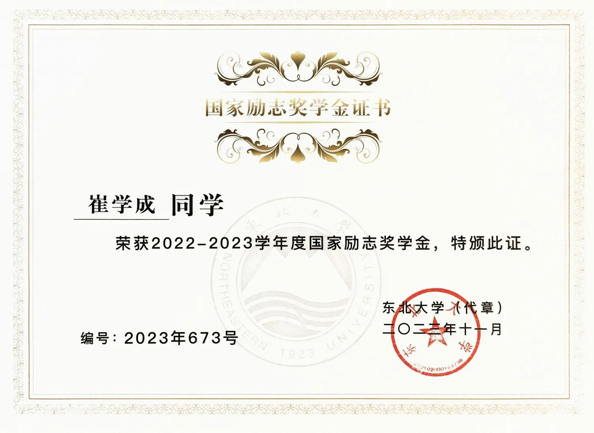
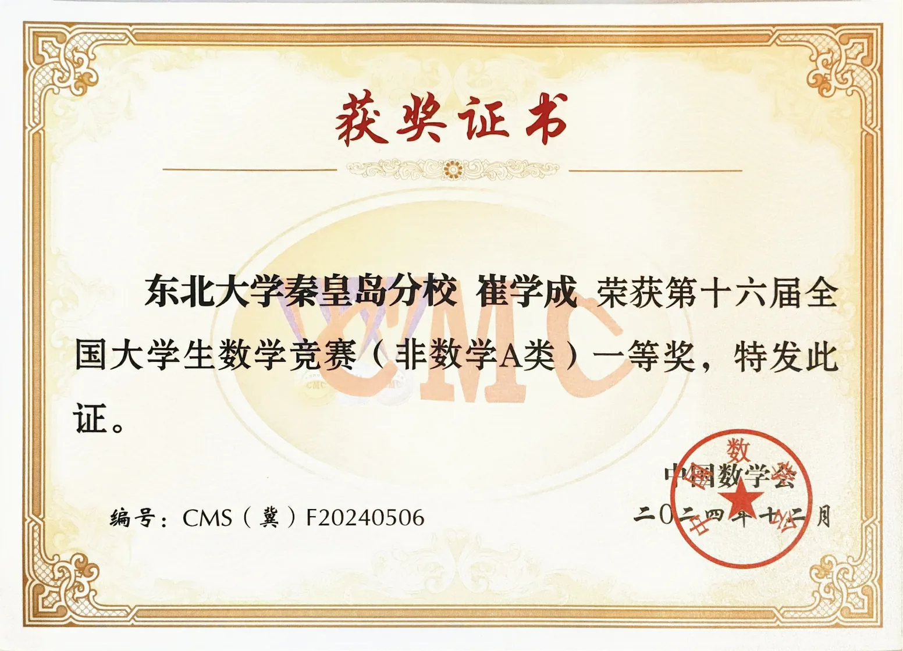
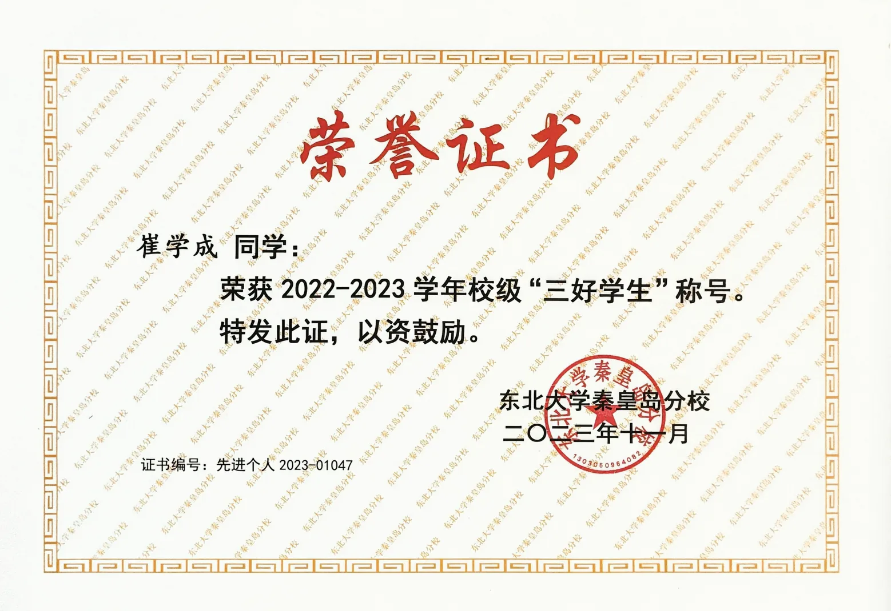
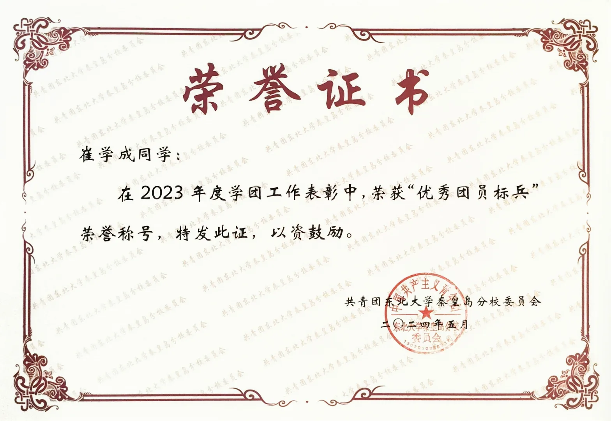
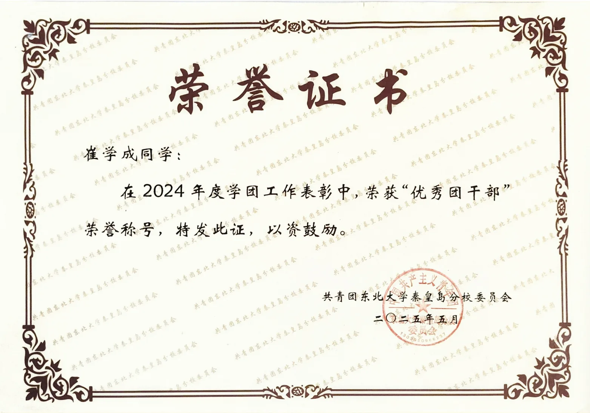
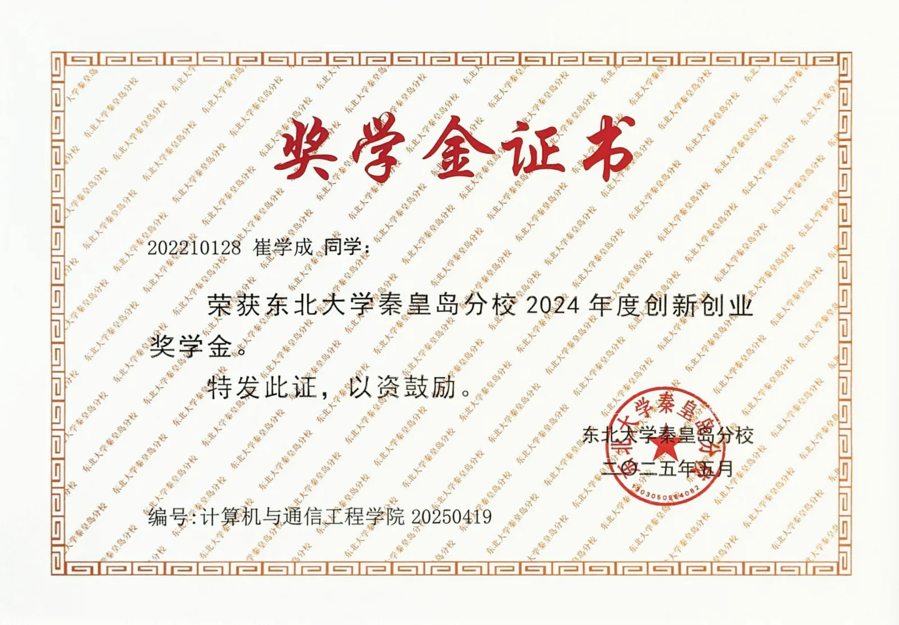
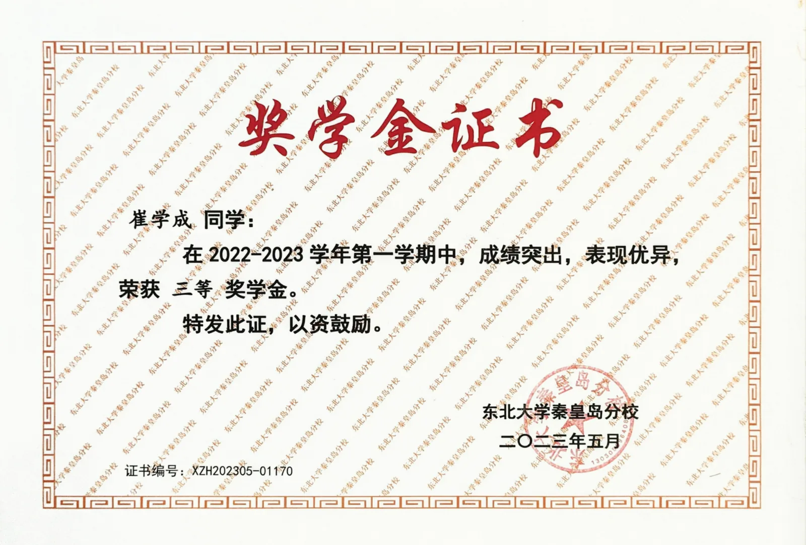
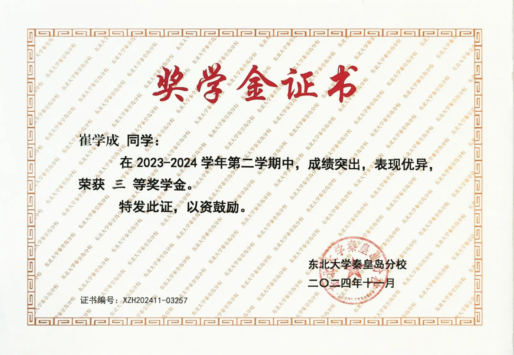
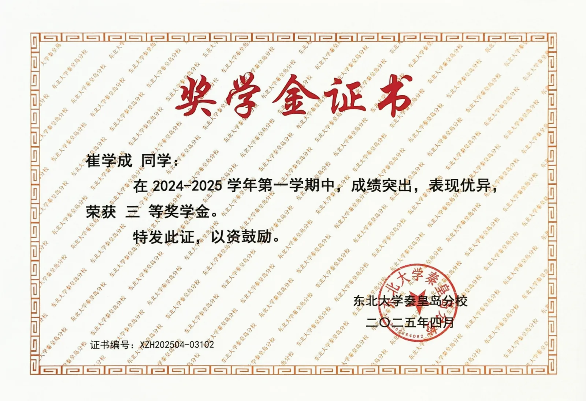
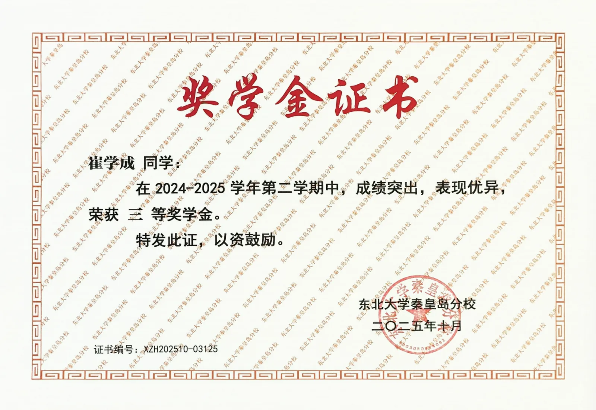
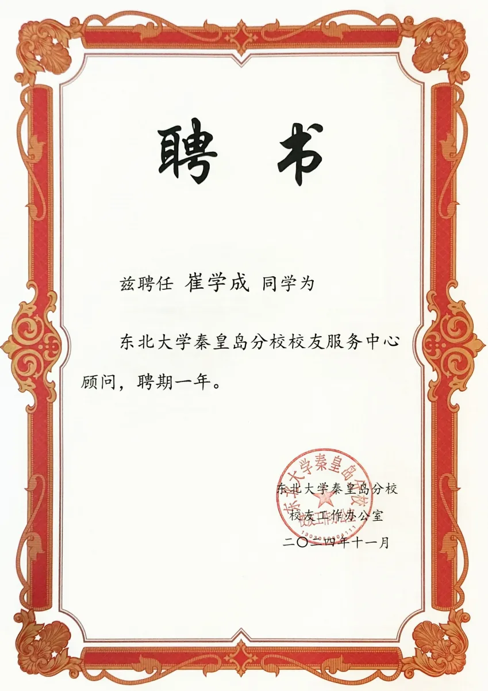
开源项目
以下项目均来自我的 GitHub：github.com/Daredevil3210
transformer-pytorch
基于 PyTorch 的 Transformer 中英机器翻译实现，支持训练、Beam Search 解码与 SentencePiece 分词。
Jupyter Notebookernie-semantic-search
基于 PaddlePaddle 与 ERNIE 的中文文献语义召回和 Pairwise 精排系统。
Pythonmailflow-agent
邮件智能体学习项目：LangGraph 工作流、DeepSeek 工具调用、人工审核与评估。
Jupyter Notebooklanggraph-tutorial
LangGraph 学习教程：StateGraph 入门、状态定义（TypedDict / dataclass / pydantic）、Reducer、节点状态等示例。
Pythonlangchain-agentic-rag-notes
基于 LangChain 的个人知识库 Agentic RAG 学习项目。
Pythonlearn-claude-code-notes
Learn Claude Code（s01–s09）学习笔记与实践，含中英文文档。